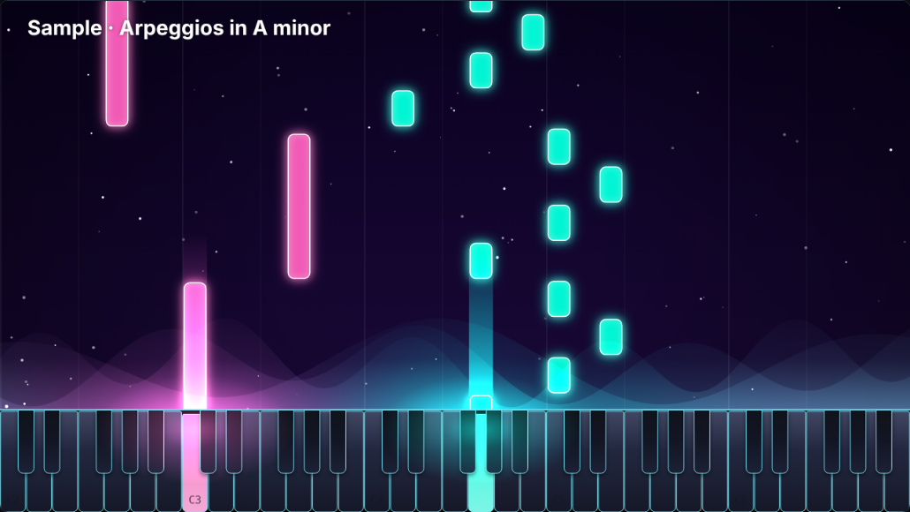
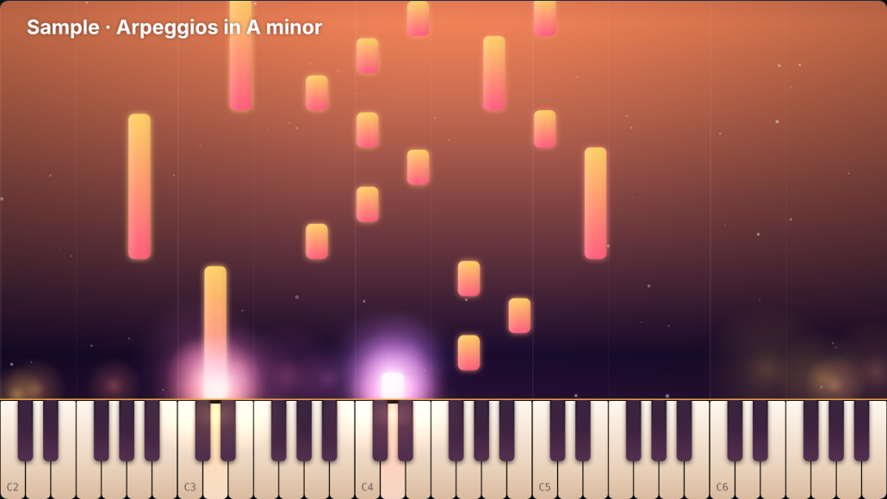
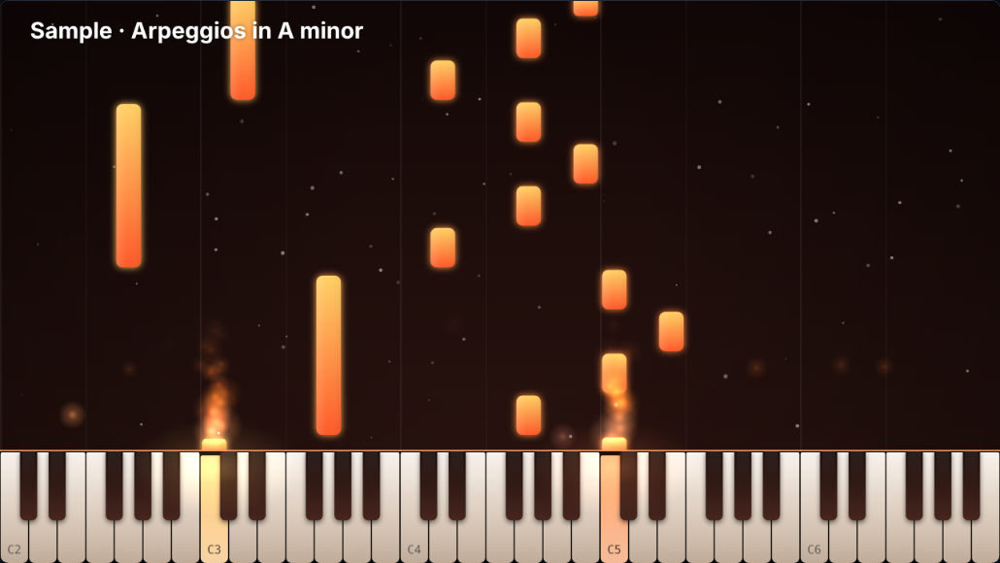

Open a MIDI or MusicXML file, style it however you like, and record it as a video. It runs in your browser, it is free, and there is nothing to install.

Drop in .mid, .midi, .xml, .musicxml or compressed .mxl files. Each track gets its own color you can show or hide.
Solid colors, gradients, moving gradients, rainbow fades, and your own pictures or videos on the notes, keys and background.
Show letter names on the keys and on the falling notes, with your choice of naming style.
Change the light where notes meet the keys: glow, aurora, smoke, fire, beams, ripples and particles in many shapes.
Start from nine ready-made looks, tweak anything, and save your own to reuse later.
A sampled grand piano by default, plus soft and bright pianos, electric piano, harp, music box, organ and synth.
Optional hands show which fingers could play each note, using a fingering search that avoids crossed fingers. Too-difficult pieces switch it off.
Add a song title and subtitle on the video, with fonts, size, position and color.
Record at 720p or 1080p, 30 or 60 fps, in any aspect ratio. Save it, or send it to YouTube if you connect your own account.


Yes. There is no account, no watermark and no limit on videos.
No. Everything happens in your browser. The only exception is the optional YouTube upload, which sends your finished video to your own channel.
The video is captured while the piece plays, so a 3-minute piece takes 3 minutes. Keep the tab in front while it records.
WebM in Chrome, Edge and Firefox, and MP4 where the browser supports it. Both upload to YouTube and most video editors.
They are a new feature. The fingering follows common piano rules, but it is a guide, not a teacher's edition, and the hand drawing is still being improved.
A recent Chrome, Edge or Firefox on a computer works best. Recording is not reliable on phones.